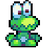
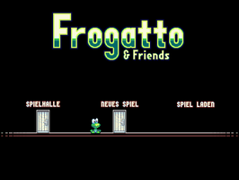
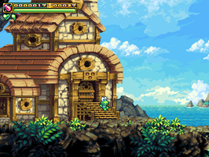
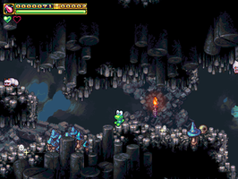

Frogatto
Dieser Artikel wurde für die folgenden Ubuntu-Versionen getestet:
Ubuntu 14.04 Trusty Tahr
Zum Verständnis dieses Artikels sind folgende Seiten hilfreich:
Desura installieren und benutzen, optional
Ein Terminal öffnen, optional
Einen Programmstarter erstellen, optional

Frogatto & Friends  (kurz Frogatto) ist ein klassisches 2D-Jump-’n’-Run-Spiel mit einem als Spielfigur. Dabei werden alle Fähigkeiten eines Frosch benötigt: springen, schwimmen, klettern, verstecken und (nicht nur) Fliegen mit der Zunge fangen. Die Linux-Version des Spiels steht kostenlos zur Verfügung. Die deutsche Übersetzung ist manchmal etwas holprig – die ursprüngliche Spielsprache war Englisch – was aber dem Spielspaß in keinster Weise schadet.
(kurz Frogatto) ist ein klassisches 2D-Jump-’n’-Run-Spiel mit einem als Spielfigur. Dabei werden alle Fähigkeiten eines Frosch benötigt: springen, schwimmen, klettern, verstecken und (nicht nur) Fliegen mit der Zunge fangen. Die Linux-Version des Spiels steht kostenlos zur Verfügung. Die deutsche Übersetzung ist manchmal etwas holprig – die ursprüngliche Spielsprache war Englisch – was aber dem Spielspaß in keinster Weise schadet.
|  |
| Spielstart |
|  |
| Frogattos Haus |
|  |
| Unterirdische Ausflüge |
Installation¶
 Das Programm ist in den offiziellen Paketquellen enthalten. Diese Installationsmethode ist die einfachste. Der Umfang der Installation ist mit ca. 150 MiB relativ groß, aber im Vergleich zu anderen Spielen nichts besonderes. Folgendes Paket muss installiert [1] werden:
Das Programm ist in den offiziellen Paketquellen enthalten. Diese Installationsmethode ist die einfachste. Der Umfang der Installation ist mit ca. 150 MiB relativ groß, aber im Vergleich zu anderen Spielen nichts besonderes. Folgendes Paket muss installiert [1] werden:
frogatto (multiverse)
 mit apturl
mit apturl
Paketliste zum Kopieren:
sudo apt-get install frogatto
sudo aptitude install frogatto
Von Frogatto gibt es nicht nur unterschiedliche Versionen (1.x.y), sondern auch eine kommerzielle Fassung. Wer die Entwickler unterstützen möchte, kann dies beispielsweise durch einen Kauf tun.
Desura¶
Das Spiel kann über die Internetseite oder den Client gekauft, zur Spieleliste hinzugefügt und gestartet [2] werden. Alternativ kann man Frogatto auch über die genannte Internetseite herunterladen (auf die passende Systemarchitektur - 32- oder 64-Bit - achten) und mit folgenden Befehlen [3] manuell installieren (getestet mit Version 1.3.2):
chmod +x frogatto-installer-linux-ARCHITEKTUR.bin ./frogatto-installer-linux-ARCHITEKTUR.bin
Bedienung¶
Bei Ubuntu-Varianten mit einem Anwendungsmenü erfolgt der Programmstart [3] über den Eintrag "Spiele -> Frogatto" oder "Spiele -> Frogatto & Friends".
Tastenkürzel¶
Ungeübte Spieler können auf der Startseite des Spiels die Tasten zur Steuerung der Spielfigur gefahrlos ausprobieren, ohne gleich ein (Frosch-)Leben zu verlieren. Vorsicht nur mit der Taste ↑ , denn damit öffnet man Türen.
| Tastenkürzel | |
| Taste(n) | Funktion |
| ← , → | bewegen |
| ← ← , → → | schnell bewegen |
| ↓ | ducken |
| ↑ | aufheben oder Türen öffnen |
| A | springen |
| S | Zunge benutzen (verteidigen) |
| Esc | Lautstärke für Soundeffekte und Hintergrundmelodien sowie Tastenkürzel anpassen |
Einstellungen¶
Einstellungen werden über zusätzliche Optionen beim Programmstart übergeben. Beispiel: Ruft man Frogatto wie gewohnt über den Menü-Eintrag auf, ist die Größe des Programmfensters auf 800x600 Pixel begrenzt. Diese Beschränkung kann man aufheben [4]. Beispiel:
frogatto --fullscreen --widescreen
Eine Übersicht der wichtigsten Optionen sind der nachfolgenden Tabelle zu entnehmen (Quelle ). Da von Frogatto unterschiedliche Versionen existieren, kann es passieren, dass die installierte Version nicht alle Optionen kennt. Die konkret vorhandenen kann man mit --help abfragen. Einstellungen und Spielstände werden im Ordner ~/.frogatto/ im Homeverzeichnis gespeichert.
Hinweis:
Bei Bedarf kann man den Programmstarter [5] /usr/share/applications/frogatto.desktop anpassen (oder einen zweiten erstellen). Bei Optionen, die mit -- beginnen, verwendet man folgende Zeile:
Exec=sh -c "frogatto --OPTION --OPTION"
| Einstellungen | |
| Option | Beschreibung |
-h, --help | Übersicht der vorhandenen Optionen |
-config-path="PFAD" | Definiert den Pfad zum Benutzerkonfigurationsbereich (Standard: ~/.frogatto/) |
--difficulty | Schwierigkeitsgrad definieren, z.B. difficulty=0. Es können Konstanten aus der Datei ~/Spiele/frogatto/data/difficulty.cfg verwendet werden. Diese Option wird i.d.R. mit dem Parameter --level verwendet. Ein fortgeschrittenes Level innerhalb des Spiels kann mit einem Cheatcode (~/Spiele/frogatto/data/frogatto_playable.cfg) kombiniert werden, um dieses mit einem anderen Schwierigkeitsgrad zu testen. |
--fullscreen | Vollbildmodus |
--windowed | Fenstermodus |
--native | Setzt die Auflösung auf die nativ verfügbare des verwendeten Bildschirms. Damit wird die ursprüngliche Zuordnung von ein Pixel im Spiel entspricht 4 Pixeln am Bildschirm (double-size mode) aufgehoben. Diese Option kombiniert man mit bzw. folgt der Angabe --width "GANZZAHL", --height "GANZZAHL" zur Fenstergröße (Voreinstellung: 800x600). Primär für sehr kleine Bildschirme gedacht (Smartphones). |
--resizable / --no-resizable | (de)aktivieren der Möglichkeit, die Größe des Programmfensters zu ändern |
--scale | Experimenteller Modus, um die Standard-Skalierung zu beeinflussen. Dieser Modus beruht auf einem speziellen Algorithmus, um die Skalierung zu verdoppeln (die Voreinstellung ist eine ungefähre Interpolation). Zur Zeit treten in diesem Modus noch Darstellungsprobleme auf. |
--widescreen | Während die Standardauflösung 800x600 (4:3) beträgt, wird das Spiel mit dieser Option in 1066x600 (ca. 16:9) dargestellt. Da sich die Skalierung nicht verändert, steht eine größerer sichtbarer Bereich innerhalb des Spiels zur Verfügung. |
--width "GANZZAHL", --height "GANZZAHL" | Angaben zur Größe des Programmfensters. Fensterinhalte werden entsprechend skaliert. |
--wvga | Auflösung von 800x480 Pixeln |
--joystick / --no-joystick | Unterstützung für einen Joystick (de)aktivieren |
--level "LEVEL_DATEI" | Spielstart im definierten Level, welche dem Ordner ~/Spiele/frogatto/data/level/ zu entnehmen sind |
--module=Modulname | Modul, welches mit dem Start der Spiel-Engine geladen werden soll. Die Grundeinstellung ist Frogatto, kann aber in der Datei master-config.cfg aus dem Verzeichnis ~/Spiele/Frogatto anders definiert werden. |
--music / --no-music | Musik (de)aktivieren |
--sound / --no-sound | Sound (de)aktivieren |
-no-send-stats | Datenübermittlung deaktivieren |
-v, --version | Workaround zur Ermittlung der intern verwendeten Spiele-Engine (keine offizielle Option) |
Achtung!
Frogatto übermittelt, eine bestehende Internetverbindung vorausgesetzt, anonymisierte Daten zur Nutzung des Spiels an die Entwickler mit dem Ziel, das Spiel weiter verbessern zu können (Quelle  , Quelle ). Wer damit nicht einverstanden ist, sollte das Spiel nicht oder nur mit deaktivierter Internetverbindung spielen. Einfacher ist es, beim Programmstart die Option
, Quelle ). Wer damit nicht einverstanden ist, sollte das Spiel nicht oder nur mit deaktivierter Internetverbindung spielen. Einfacher ist es, beim Programmstart die Option --no-send-stats zu benutzen.
Einstellungen werden in der Datei ~/.frogatto/preferences.cfg gespeichert. Beispiele (die intern verwendete Syntax weicht zwischen den verschiedenen Versionen leicht ab):
Version 1.3.2:
{ "allow_autopause": false, "joystick": true, "key_attack": 100, "key_down": 274, "key_jump": 97, "key_left": 276, "key_right": 275, "key_tongue": 115, "key_up": 273, "music_volume": 1000, "no_music": false, "no_sound": false, "registry": { }, "reverse_ab": false, "show_iphone_controls": false, "sound_volume": 1000, "user_id": xxxxxxxxxxxx }Version 1.2:
[preferences] joystick="true" key_attack="100" key_down="274" key_jump="97" key_left="276" key_right="275" key_tongue="115" key_up="273" music_volume="1000" no_music="false" no_sound="false" reverse_ab="false" sound_volume="1000" user_id="xxxxxxxxxxxx" [registry] [/registry] [/preferences]
Infobox¶
| Frogatto & Friends | |
| Genre: | Jump'n'Run |
| Sprache: |      |
| Veröffentlichungen: | 2008+ |
| Entwickler: | Frogatto Team und Lost Pixel |
| Systemvoraussetzungen: | - |
| Medien: | Download |
| Strichcode / EAN / GTIN: | - |
| Läuft mit: | nativ |
 Programmübersicht
Programmübersicht- Erstellt mit Inyoka
-
 2004 – 2017 ubuntuusers.de • Einige Rechte vorbehalten
2004 – 2017 ubuntuusers.de • Einige Rechte vorbehalten
Lizenz • Kontakt • Datenschutz • Impressum • Serverstatus -
Serverhousing gespendet von